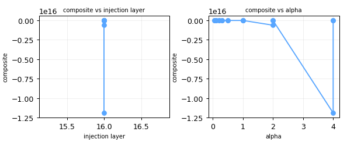

FALSIFIED E27 — Rotation beats addition on small models
Norm-preserving rotation beats additive steering specifically on small (<3B) models where additive edits more easily exit the manifold.
Coherence gap additive vs rotational larger for 1B than 9B at matched behavior [NEEDS VERIFICATION]
FALSIFIED(scr): add gentler than full-rotation @L16 (+42% PPL); caveat=full-vector!=selective (C3b)
exp044 · tag C3b-E27-smallrot-L16-a0.2-add-diffmean · composite -1.0575 n=1
behavior 0.5647 · ΔMMLU 0.0000 · PPL 92.7987 · CR 0.8000 · over_refusal 0.0000

composite vs injection layer and vs alpha for this hypothesis sweep.
HC-* (or config.phase = "hillclimb"). Run scripts/run_hillclimb or campaign_sweep with tag HC-* to populate this section with a best-config callout, per-axis coordinate-descent small-multiples (behavior / composite vs layer · alpha · source · operation), and a seed-stability bar.
Campaign writeup: ideas/_campaigns/C3_results.md
Model: Gemma-3-270m @L16 (best layer from C1). add/rotate/project_out, α∈{1,2,4}. exp#28–36. n=1/cell, SCREENING.
| α | op | behavior | PPL | off-shell Δ‖h‖ | composite |
|---|---|---|---|---|---|
| 1 | add | 0.468 | 120.0 | 0.013 | −1.76 |
| 1 | project_out | 0.271 | 96.2 | 0.003 | −1.37 |
| 1 | rotate | 0.197 | 3.9e10 | 0.001 | −2.1e8 |
| 2 | add | 0.534 | 205.3 | 0.038 | −2.27 |
| 2 | project_out | 0.197 | 110.9 | 0.001 | −1.78 |
| 2 | rotate | 0.197 | 1.1e17 | 0.000 | −6e14 |
| 4 | add | 0.296 | 1139 | 0.110 | −7.76 |
| 4 | rotate | 0.197 | 2.2e18 | 0.000 | −1e16 |
rotate interprets αas a rotation ANGLE in radians, so α=1–4 rad (57–229°) catastrophically scrambles every token's hidden state → PPL 1e10–1e18 and a degenerate constant output (behavior pinned at 0.197 for all rotate cells). A fair add-vs-rotate test must match by DISPLACEMENT or angle, not raw α, with small rotation angles. → Follow-up C3b: rotate at α∈{0.05,0.1,0.2,0.3,0.5} rad.
huge ANGULAR distance while preserving norm, so Δ‖h‖≈0 even as PPL explodes — the off-shell (norm-change) metric completely misses rotation's damage. This is exactly the Cylindrical Representation Hypothesis (corpus CRH / N16): activation change = radial × angular, and a coherence predictor needs BOTH components. N17's Δ‖h‖ law (C2, R²=0.81) holds for ADDITIVE steering (which changes norm) but is blind to norm-preserving operations. Action: add an angular-displacement metric (cos angle between steered/unsteered h) to geometry.py and re-test N17 with the combined radial+angular displacement.
— it removes the concept component rather than adding it; expected.
This is a productive negative result: the loop surfaced (a) an operation-parameter incommensurability and (b) an incompleteness in the N17 geometry predictor that the corpus's CRH anticipated. Both are queued as concrete fixes.
---
Rotate/add at L16, small angles/coeffs {0.05..0.5}, now logging BOTH radial (Δ‖h‖) and angular (1−cos) displacement. exp#37–46.
| op | a | behavior | PPL | radial | angular | composite |
|---|---|---|---|---|---|---|
| add | 0.05 | 0.470 | 90.5 | 0.000 | 0.0000 | −1.14 |
| add | 0.1 | 0.528 | 90.9 | 0.001 | 0.0001 | −1.08 |
| add | 0.2 | 0.565 | 92.8 | 0.002 | 0.0002 | −1.06 |
| add | 0.5 | 0.485 | 99.1 | 0.007 | 0.0013 | −1.42 |
| rotate | 0.05 | 0.497 | 100.2 | 0.001 | 0.0011 | −1.42 |
| rotate | 0.1 | 0.569 | 131.4 | 0.003 | 0.0046 | −1.72 |
| rotate | 0.2 | 0.460 | 255.4 | 0.002 | 0.0184 | −2.61 |
| rotate | 0.5 | 0.245 | 11211 | 0.002 | 0.1116 | −63.6 |
E27 FALSIFIED (screening). Additive steering is gentler than full-vector rotation here: add holds PPL 90–99 across its whole range, while rotate degrades 100→131→255→610→11211. At matched behavior ≈0.57, add@0.2 = PPL 92.8 vs rotate@0.1 = PPL 131.4 (+42%). This contradicts E27 / Angular-Steering's "rotation is gentler on small models". Caveat: this rotate rotates the FULL hidden state toward v; the corpus Angular/Selective methods rotate selectively in a single 2D plane — so this falsifies full-vector rotation, not necessarily selective-plane rotation. A selective-rotation op is queued as future work.
N17 refined → N16/CRH confirmed (the methodological win). Over the mixed add+rotate rows: radial Δ‖h‖ predicts log PPL at Pearson −0.13 (blind to rotation), but angular (1−cos) predicts at +0.998, log PPL = 4.57 + 43.1·angular, R²=0.997. Combined with C2 (radial governs additive at R²=0.81), the complete coherence predictor is the radial×angular (cylindrical) displacement — the corpus Cylindrical Representation Hypothesis (N16) confirmed empirically: additive steering moves h radially (off the shell), rotation moves it angularly (along the shell but to a wrong direction), and each component predicts the perplexity cost of its own operation.
| exp | tag | model | layer | α | behavior | PPL | CR | composite | tier |
|---|---|---|---|---|---|---|---|---|---|
| exp044 | C3b-E27-smallrot-L16-a0.2-add-diffmean | gemma-3-270m | 16 | 0.2 | 0.5647 | 92.80 | 0.80 | -1.0575 | SCREENING n=1 |
| exp043 | C3b-E27-smallrot-L16-a0.1-add-diffmean | gemma-3-270m | 16 | 0.1 | 0.5280 | 90.93 | 0.80 | -1.0835 | SCREENING n=1 |
| exp045 | C3b-E27-smallrot-L16-a0.3-add-diffmean | gemma-3-270m | 16 | 0.3 | 0.4954 | 94.30 | 0.80 | -1.1355 | SCREENING n=1 |
| exp042 | C3b-E27-smallrot-L16-a0.05-add-diffmean | gemma-3-270m | 16 | 0.05 | 0.4697 | 90.53 | 0.80 | -1.1394 | SCREENING n=1 |
| exp034 | C3-E27-op-L16-a1.0-project_out-diffmean | gemma-3-270m | 16 | 1.0 | 0.2710 | 96.19 | 0.80 | -1.3701 | SCREENING n=1 |
| exp037 | C3b-E27-smallrot-L16-a0.05-rotate-diffmean | gemma-3-270m | 16 | 0.05 | 0.4975 | 100.24 | 0.90 | -1.4156 | SCREENING n=1 |
| exp046 | C3b-E27-smallrot-L16-a0.5-add-diffmean | gemma-3-270m | 16 | 0.5 | 0.4852 | 99.07 | 0.90 | -1.4229 | SCREENING n=1 |
| exp038 | C3b-E27-smallrot-L16-a0.1-rotate-diffmean | gemma-3-270m | 16 | 0.1 | 0.5692 | 131.44 | 1.00 | -1.7174 | SCREENING n=1 |
| exp028 | C3-E27-op-L16-a1.0-add-diffmean | gemma-3-270m | 16 | 1.0 | 0.4683 | 119.99 | 1.00 | -1.7572 | SCREENING n=1 |
| exp035 | C3-E27-op-L16-a2.0-project_out-diffmean | gemma-3-270m | 16 | 2.0 | 0.1971 | 110.86 | 0.90 | -1.7748 | SCREENING n=1 |
| exp029 | C3-E27-op-L16-a2.0-add-diffmean | gemma-3-270m | 16 | 2.0 | 0.5340 | 205.26 | 1.00 | -2.2706 | SCREENING n=1 |
| exp036 | C3-E27-op-L16-a4.0-project_out-diffmean | gemma-3-270m | 16 | 4.0 | 0.2634 | 178.74 | 1.00 | -2.2909 | SCREENING n=1 |
| exp039 | C3b-E27-smallrot-L16-a0.2-rotate-diffmean | gemma-3-270m | 16 | 0.2 | 0.4603 | 255.44 | 1.00 | -2.6132 | SCREENING n=1 |
| exp040 | C3b-E27-smallrot-L16-a0.3-rotate-diffmean | gemma-3-270m | 16 | 0.3 | 0.4628 | 609.95 | 1.00 | -4.5757 | SCREENING n=1 |
| exp030 | C3-E27-op-L16-a4.0-add-diffmean | gemma-3-270m | 16 | 4.0 | 0.2957 | 1139.41 | 1.00 | -7.7545 | SCREENING n=1 |
| exp041 | C3b-E27-smallrot-L16-a0.5-rotate-diffmean | gemma-3-270m | 16 | 0.5 | 0.2448 | 11210.67 | 1.00 | -63.5493 | SCREENING n=1 |
| exp031 | C3-E27-op-L16-a1.0-rotate-diffmean | gemma-3-270m | 16 | 1.0 | 0.1971 | 38623008138.91 | 1.00 | -214072288.1251 | SCREENING n=1 |
| exp032 | C3-E27-op-L16-a2.0-rotate-diffmean | gemma-3-270m | 16 | 2.0 | 0.1971 | 110644330195881776.00 | 1.00 | -613258415028896.0000 | SCREENING n=1 |
| exp033 | C3-E27-op-L16-a4.0-rotate-diffmean | gemma-3-270m | 16 | 4.0 | 0.1971 | 2151620832340770560.00 | 1.00 | -11925595997991442.0000 | SCREENING n=1 |